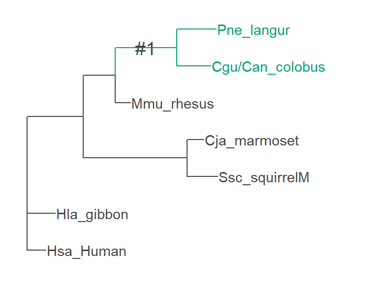

PAML チュートリアル
突貫で書いた即席のページです。
PAML のテストデータを材料に codeml を一通り動かしてみる。
Phylogenetic Analysis by Maximum Likelihood (PAML) は、DNA やタンパク質の配列を最尤法で系統解析するための 種々のプログラムを含むパッケージ。
今回はその中で、コドンの配列から同義置換に対する非同義置換の速度である \omega = d_\text{N} / d_\text{S} を推定して正の自然選択の検出を行う codeml を使う。
テストデータの準備
PAML の方で用意してある リゾチームの配列 を使う。んだけど、ファイルフォーマットが普段牧野研でよく使う形式と異なるので、 ひとまず↓をコピペして使ってください。
lysozymeSmall.fa
>Hsa_Human
AAGGTCTTTGAAAGGTGTGAGTTGGCCAGAACTCTGAAAAGATTGGGAATGGATGGCTAC
AGGGGAATCAGCCTAGCAAACTGGATGTGTTTGGCCAAATGGGAGAGTGGTTACAACACA
CGAGCTACAAACTACAATGCTGGAGACAGAAGCACTGATTATGGGATATTTCAGATCAAT
AGCCGCTACTGGTGTAATGATGGCAAAACCCCAGGAGCAGTTAATGCCTGTCATTTATCC
TGCAGTGCTTTGCTGCAAGATAACATCGCTGATGCTGTAGCTTGTGCAAAGAGGGTTGTC
CGTGATCCACAAGGCATTAGAGCATGGGTGGCATGGAGAAATCGTTGTCAAAACAGAGAT
GTCCGTCAGTATGTTCAAGGTTGTGGAGTG
>Hla_gibbon
AAGGTCTTTGAAAGGTGTGAGTTGGCCAGAACTCTGAAAAGATTGGGAATGGATGGCTAC
AGGGGAATCAGCCTAGCAAACTGGATGTGTTTGGCCAAATGGGAGAGTGGTTATAACACA
CGAGCTACAAACTACAATCCTGGAGACAGAAGCACTGATTATGGGATATTTCAGATCAAT
AGCCGCTACTGGTGTAATGATGGCAAAACCCCAGGAGCAGTTAATGCCTGTCATTTATCC
TGCAATGCTTTGCTGCAAGATAACATCGCCGATGCTGTAGCTTGTGCAAAGAGGGTTGTC
CGCGATCCACAAGGCATTAGAGCATGGGTGGCATGGAGAAATCGTTGTCAAAACAGAGAT
CTCCGTCAGTATATTCAAGGTTGTGGAGTA
>Cgu/Can_colobus
AAGATCTTTGAAAGGTGTGAGTTGGCCAGAACTCTGAAAAAATTGGGACTGGATGGCTAC
AAGGGAGTCAGCCTAGCAAACTGGGTGTGTTTGGCCAAATGGGAGAGTGGTTATAACACA
GACGCTACAAACTACAATCCTGGAGATGAAAGCACTGATTATGGGATATTTCAGATCAAT
AGCCGCTACTGGTGTAATAATGGCAAAACCCCAGGAGCAGTTAATGCCTGTCATATATCC
TGCAATGCTTTGCTGCAAAATAACATCGCTGATGCTGTAGCTTGTGCAAAGAGGGTTGTC
AGTGATCCACAAGGCATTCGAGCATGGGTGGCATGGAAAAAGCACTGTCAAAACAGAGAT
GTCAGTCAGTATGTTGAAGGTTGTGGAGTA
>Pne_langur
AAGATCTTTGAAAGGTGTGAGTTGGCCAGAACTCTGAAAAAATTGGGACTGGATGGCTAC
AAGGGAGTCAGCCTAGCAAACTGGGTGTGTTTGGCCAAATGGGAGAGTGGTTATAACACA
GAAGCTACAAACTACAATCCTGGAGACGAAAGCACTGATTATGGGATATTTCAGATCAAT
AGCCGCTACTGGTGTAATAATGGCAAAACCCCAGGAGCAGTTGATGCCTGTCATATATCC
TGCAGTGCTTTGCTGCAAAACAACATCGCTGATGCTGTAGCTTGTGCAAAGAGGGTTGTC
AGTGATCCACAAGGCGTTCGAGCATGGGTGGCATGGAGAAATCACTGTCAAAACAAAGAT
GTCAGTCAGTACGTTAAAGGTTGTGGAGTG
>Mmu_rhesus
AAGATCTTTGAAAGGTGTGAGTTGGCCAGAACTCTGAAAAGATTGGGACTGGATGGCTAC
AGGGGAATCAGCCTAGCAAACTGGGTGTGTTTGGCCAAATGGGAGAGTAATTATAACACA
CAAGCTACAAACTACAATCCTGGAGACCAAAGCACTGATTATGGGATATTTCAGATCAAT
AGCCACTACTGGTGTAATAATGGCAAAACCCCAGGAGCAGTTAATGCCTGTCATATATCC
TGCAATGCTTTGCTGCAAGATAACATCGCTGATGCTGTAACTTGTGCAAAGAGGGTTGTC
AGTGATCCACAAGGCATTAGAGCATGGGTGGCATGGAGAAATCACTGTCAAAACAGAGAT
GTCAGTCAGTATGTTCAAGGTTGTGGAGTG
>Ssc_squirrelM
AAGGTCTTCGAAAGGTGTGAGTTGGCCAGAACTCTGAAAAGGCTTGGAATGGATGGCTAC
AGGGGAATCAGCCTAGCAAACTGGATGTGTTTGGCCAAATGGGAGAGTGACTATAACACA
CGTGCTACAAACTACAATCCTGGAGACCAAAGCACTGATTATGGGATATTTCAGATCAAT
AGCCACTATTGGTGTAATAATGGCAGAACCCCAGGAGCAGTTAATGCCTGTCATATATCC
TGCAATGCTTTGCTGCAAGATGACATCACTCAAGCTGTGGCCTGTGCAAAGAGGGTTGTC
CGTGATCCACAAGGCATTAGAGCATGGGTGGCATGGAAAGCTCATTGTCAAAACAGAGAT
GTCAGTCAGTATGTTCAAGGTTGTGGAGTA
>Cja_marmoset
AAGGTCTTTGAAAGGTGTGAGTTGGCCAGAACTCTGAAAAGGTTTGGACTGGATGGCTAC
AGGGGAATCAGCCTAGCAAACTGGATGTGTTTGGCCAAATGGGAGAGTGATTATAACACA
CGTGCTACAAACTACAATCCTGGAGACCAAAGCACTGATTATGGGATATTTCAGATCAAT
AGCCACTATTGGTGTAACAATGGCAGAACCCCAGGAGCAGTTAATGCCTGTCATATATCC
TGCAATGCTTTGCTGCAAGATGACATCACTGAAGCTGTGGCCTGTGCAAAGAGGGTTGTC
CGCGATCCACAAGGCATTAGGGCATGGGTGGCATGGAAAGCTCATTGTCAAAACAGAGAT
GTCAGTCAGTATGTTCAAGGTTGTGGAGTAlysozymeSmall.fa.treefile
(Hsa_Human:0.0087447996,Hla_gibbon:0.0130303081,(((Cgu/Can_colobus:0.0156654142,Pne_langur:0.0181835564):0.0280807319,Mmu_rhesus:0.0070703774):0.0147707727,(Ssc_squirrelM:0.0140657314,Cja_marmoset:0.0076397044):0.0477319527):0.0256856586);系統樹ファイルは IQ-TREE を使って推定したもの。 手元でやってもらってもいいです。
iqtree2 --version
# IQ-TREE multicore version 2.0.7 for Linux 64-bit built Jan 21 2022
# Developed by Bui Quang Minh, Nguyen Lam Tung, Olga Chernomor,
# Heiko Schmidt, Dominik Schrempf, Michael Woodhams.
iqtree2 -s lysozymeSmall.fa -m TEST生物学的な背景
葉を常食とする旧世界ザル (左図) で、 反芻動物に似た前胃での発酵をともなう消化を獲得
前胃に分泌されるリゾチームが進化
素の PAML を動かす
PAML をインストールする
いずれかのパッケージ管理ツールを介するのが楽。
Homebrew を使う場合 brewsci/bio/ リポジトリのため、 M2 チップ以降の Mac には対応していない可能性がある。 遺伝研では apptainer (singularity) を使わなくてもすでに PAML の環境が整っている。 (c.f. which -a codeml)
## Homebrew を使う (Mac, M2 チップ以上だと無理かも)
brew install brewsci/bio/paml
## apt を使う (Ubuntu)
sudo apt install paml
## conda を介したインストール (共通)
conda install -c bioconda paml
## apptainer のやつを使う (遺伝研)
ls /usr/local/biotools/p/paml*これらのいずれの方法も使えないときは、 ソースコードを ダウンロードして手元でビルドする。 方法は公式サイトに記載がある。
.ctl ファイルの概要
codeml を動かすとき、ファイルの指定や種々のオプションの指定は、 すべてコントロールファイル (.ctl) に記述する。 見た目はこんな感じ:
lysozymeSmall.ctl
seqfile = lysozymeSmall.fa
treefile = lysozymeSmall.fa.treefile
outfile = your_output_file
noisy = 9 * 0,1,2,3,9: how much rubbish on the screen
verbose = 1 * 1: detailed output, 0: concise output
runmode = 0 * 0: user tree; 1: semi-automatic; 2: automatic
* 3: StepwiseAddition; (4,5):PerturbationNNI
seqtype = 1 * 1:codons; 2:AAs; 3:codons-->AAs
CodonFreq = 2 * 0:1/61 each, 1:F1X4, 2:F3X4, 3:codon table
clock = 0 * 0: no clock, unrooted tree, 1: clock, rooted tree
model = 2
* models for codons:
* 0:one, 1:b, 2:2 or more dN/dS ratios for branches
NSsites = 0 * dN/dS among sites. 0:no variation, 1:neutral, 2:positive
icode = 0 * 0:standard genetic code; 1:mammalian mt; 2-10:see below
fix_kappa = 0 * 1: kappa fixed, 0: kappa to be estimated
kappa = 2 * initial or fixed kappa
fix_omega = 0 * 1: omega or omega_1 fixed, 0: estimate
omega = 2 * initial or fixed omega, for codons or codon-transltd AAs
fix_alpha = 1 * 0: estimate gamma shape parameter; 1: fix it at alpha
alpha = .0 * initial or fixed alpha, 0:infinity (constant rate)
Malpha = 0 * different alphas for genes
ncatG = 4 * # of categories in the dG or AdG models of rates
getSE = 0 * 0: don't want them, 1: want S.E.s of estimates
RateAncestor = 0 * (1/0): rates (alpha>0) or ancestral states (alpha=0)
method = 0 * 0: simultaneous; 1: one branch at a time
fix_blength = 0 * 0: ignore, -1: random, 1: initial, 2: fixed, 3: proportional
* Specifications for duplicating results for the small data set in table 1
* of Yang (1998 MBE 15:568-573).
* see the tree file lysozyme.trees for specification of node (branch) labelsどの解析でも共通で変更するのは seqfile, treefile, outfile の3つ。 model, NSsites, fix_omega, omega は解析に応じて変更する。
seqfile- DNAまたはタンパク質の配列のファイルパス。
treefile-
系統樹のファイルパス。tip 名は
seqfileのものと一致している必要がある。 outfile- 出力ファイルのパス。
model- 系統樹の各 branch における \omega = d_\text{N} / d_\text{S} の設定。
- 0: 系統樹全体で均一の \omega = d_\text{N} / d_\text{S} を推定。
- 1: branch ごとに異なる \omega = d_\text{N} / d_\text{S} を推定。
-
2:
treefileの branch に#,#1などの記号を振って各記号の branch で異なる \omega = d_\text{N} / d_\text{S} を推定。 NSsites- コドン/アミノ酸サイトごとの \omega = d_\text{N} / d_\text{S} の設定。
- 0: サイト間で \omega = d_\text{N} / d_\text{S} が同じと仮定。branch モデルの時はこれ。
- 1: Neutral
- 2: Positive
fix_omega- \omega = d_\text{N} / d_\text{S} を固定するかどうか。
- 0: 初期値から最尤推定する。
- 1: 初期値で固定する。
omega- \omega = d_\text{N} / d_\text{S} の初期値。
おおまかな流れ
検証したいシナリオ (特定の枝で正の自然選択がある、等) を対立仮説、 そうでないと仮定するシナリオを帰無仮説としてそれぞれ .ctl を書いて codeml を動かす。
それぞれの仮説のパラメータ数と対数尤度が得られるので、 尤度比検定を用いて帰無仮説を棄却することで対立仮説を採択する。
よく使われる対立仮説と帰無仮説の組み合わせは以下の表のとおり:
| 対立仮説 | 帰無仮説 | 検定すること | 引用 |
|---|---|---|---|
| M2 | M1 | 特定サイトにおける正の自然選択 | Yang 2000 |
| M3 | M0 | サイト間で d_\text{N} / d_\text{S} が異なるか | 〃 |
| M8 | M7 | 特定サイトにおける正の自然選択 | Yang 2000 |
| M8 | M8a | 特定サイトにおける選択の緩和 | 〃 |
| bsA | bsA1 | 特定の枝の特定のサイトにおける正の自然選択 | Zhang 2005 |
| bsA | M1 | 特定の枝の特定のサイトにおける選択の緩和 | Zhang 2005 |
| bsC | M1 | 特定のクレードの特定のサイトで d_\text{N} / d_\text{S} が異なるか | Yang 2002 |
| bsD | M3 | 特定のクレードの特定のサイトで d_\text{N} / d_\text{S} が異なるか | Yang 2002, Bielawski 2004 |
| b_free | b_neut | 特定の枝で d_\text{N} / d_\text{S} が1と異なるか | Yang 2002 |
| b_free | M0 | 特定の枝で d_\text{N} / d_\text{S} が他と異なるか | Yang 2002 |
Site モデル
🚧 工事中 🚧
Branch モデル
旧世界ザルの共通祖先の枝を対象に、 正の自然選択 (d_\text{N} / d_\text{S} > 0) を検出する。
まず対立仮説として、注目する枝で d_\text{N} / d_\text{S} が異なると仮定して codeml を動かす。
系統樹 (lysozymeSmall.fa.treefile) をエディタで編集して、 注目する枝 (i.e. d_\text{N} / d_\text{S} > 0 を想定する枝) に #1 を振る:
(Hsa_Human:0.0087447996,Hla_gibbon:0.0130303081,(((Cgu/Can_colobus:0.0156654142,Pne_langur:0.0181835564)#1:0.0280807319,Mmu_rhesus:0.0070703774):0.0147707727,(Ssc_squirrelM:0.0140657314,Cja_marmoset:0.0076397044):0.0477319527):0.0256856586);
#1 を振った枝とその他の枝で d_\text{N} / d_\text{S} が異なる、 というシナリオの .ctl を書く:
b_free.ctl
outfile = branch_alt * 何でもいいけど branch モデルの対立仮説と分かるように
model = 2 * 記号の有無で異なる ω を推定
NSsites = 0 * サイト間では ω は一定
fix_omega = 0 * ω の値を配列から推定
omega = 1 * 推定は ω=1 からスタート
* 他のパラメータは変更なしこの .ctl を指定して codeml を実行:
codeml b_free.ctl指定した出力ファイル branch_alt を見てみる。 まずは最後の方に書かれている各枝の \omega の値:
tail branch_altdS tree:
(Hsa_Human: 0.011030, Hla_gibbon: 0.016794, (((Cgu/Can_colobus: 0.018929, Pne_langur: 0.022497): 0.009367, Mmu_rhesus: 0.008406): 0.018929, (Ssc_squirrelM: 0.017701, Cja_marmoset: 0.010258): 0.052331): 0.030198);
dN tree:
(Hsa_Human: 0.007565, Hla_gibbon: 0.011517, (((Cgu/Can_colobus: 0.012981, Pne_langur: 0.015429): 0.032838, Mmu_rhesus: 0.005765): 0.012982, (Ssc_squirrelM: 0.012140, Cja_marmoset: 0.007035): 0.035889): 0.020710);
w ratios as labels for TreeView:
(Hsa_Human #0.68581 , Hla_gibbon #0.68581 , (((Cgu/Can_colobus #0.68581 , Pne_langur #0.68581 ) #3.50573 , Mmu_rhesus #0.68581 ) #0.68581 , (Ssc_squirrelM #0.68581 , Cja_marmoset #0.68581 ) #0.68581 ) #0.68581 );
Time used: 0:01期待通り、#1 を振った枝とそれ以外の枝で異なる \omega が計算されている。 (旧世界ザルの共通祖先で \omega = 3.50573, そのほかの枝で \omega = 0.68581)
もう一か所は、パラメータ数と対数尤度が記述された行:
grep "lnL" branch_altlnL(ntime: 11 np: 14): -904.636553 +0.000000パラメータ数が14、対数尤度が -904.636553 であることを示している。
次に、帰無仮説として指定した枝の \omega を1で固定したモデルの 当てはまりを計算する。
.ctl の以下のパラメータを変更する:
b_neut.ctl
outfile = branch_null * 何でもいいけど branch モデルの帰無仮説と分かるように
fix_omega = 1 * ω の値を固定
omega = 1 * ω=1
* 他のパラメータは変更なしこの .ctl を指定して codeml を実行:
codeml b_neut.ctl同様に出力ファイル branch_null を見てみる。 各枝の \omega の値は:
w ratios as labels for TreeView:
(Hsa_Human #0.685577 , Hla_gibbon #0.685577 , (((Cgu/Can_colobus #0.685577 , Pne_langur #0.685577 ) #1 , Mmu_rhesus #0.685577 ) #0.685577 , (Ssc_squirrelM #0.685577 , Cja_marmoset #0.685577 ) #0.685577 ) #0.685577 );パラメータ数と対数尤度は:
$ grep "lnL" branch_null
lnL(ntime: 11 np: 13): -905.484183 +0.000000まとめると次のようになった:
| 仮説 | 注目する枝の \omega | パラメータ数 | 対数尤度 |
|---|---|---|---|
| 対立仮説 | 3.50573 | 14 | -904.636553 |
| 帰無仮説 | 1 | 13 | -905.484183 |
最後に尤度比検定を行って、 「注目する枝の \omega が他の枝より高いようだけど、 これは選択の緩和 (\omega=1) じゃなくて 正の自然選択 (\omega>1) だ。」 ということを統計的に主張できるかどうか確かめる。
尤度比検定の方法はいくつかあるけど、R とか Python 使うのがいいんじゃないだろうか。 (エクセルとかでもできるらしい。)
Python の尤度比検定の関数を使って検定する:
lrp.py
from scipy.stats import chi2
alt_lnL = -904.636553 # 対立仮説の対数尤度
null_lnL = -905.484183 # 帰無の対数尤度
lr_stat = 2 * (alt_lnL - null_lnL)
alt_np = 14 # 対立仮説のパラメータ数
null_np = 13 # 帰無仮説のパラメータ数
df = alt_np - null_np
p_val = chi2.sf(lr_stat, df)
print(p_val)$ python3 lrt.py
0.19290903422911437結果、尤度比検定の p-value は 0.1929 > 0.05 となった。 これを解釈すると、帰無仮説を棄却することができない = 正の自然選択とは主張できないとなる。
Branch-Site モデル
Site モデルや Branch モデルは枝全体やサイト全体で \omega を平均するため、 時に検出力が弱くなる。
つまり、ある枝で特定のサイトに正の自然選択が本当に働いていたとしても、 他のサイトや枝の \omega が小さければそれに引っ張られて \omega > 1 を検出できない。
そこで、Branch-Site モデルは特定の枝の特定のサイトに働いた自然選択を検出する。
使う系統樹は Branch モデルと同じ。
まず対立仮説として、#1 を振った枝で \omega > 1 のサイトがある、 というシナリオの .ctl を書く:
bsA.ctl
outfile = bs_alt * 何でもいいけど branch-site モデルの対立仮説と分かるように
model = 2 * 記号の有無で異なる ω を推定
NSsites = 2 * ω > 1 のサイトを仮定
fix_omega = 0 * ω の値を配列から推定
omega = 1 * 推定は ω=1 からスタート
* 他のパラメータは変更なしこの .ctl を指定して codeml を実行:
codeml bsA.ctl出力ファイル bs_alt を見てみる。 以下のような記述があるはず:
MLEs of dN/dS (w) for site classes (K=4)
site class 0 1 2a 2b
proportion 0.29433 0.35964 0.15574 0.19029
background w 0.00000 1.00000 0.00000 1.00000
foreground w 0.00000 1.00000 5.78754 5.78754各サイトクラスは次のように解釈する:
- site class 0
-
#1を振った枝もそれ以外も \omega < 1 であるサイト - 今回は全サイトのうち約29%がこれにあたり、\omega = 0 の強い純化選択をうけている。
- site class 1
-
#1を振った枝もそれ以外も \omega = 1 であるサイト - 今回は全サイトのうち約36%がこれにあたる。
- site class 2a
-
#1を振った枝で \omega > 1、 それ以外で \omega < 1 であるサイト -
今回は全サイトのうち約16%がこれにあたり、
#1の枝では \omega = 5.78754 の強い正の自然選択が働いている。 - site class 2b
-
#1を振った枝で \omega > 1、 それ以外で \omega = 1 であるサイト - 今回は全サイトのうち約19%がこれにあたる。
次は Branch モデルと同じく、パラメータ数と対数尤度が記述された行:
$ grep "lnL" bs_alt
lnL(ntime: 11 np: 16): -901.562791 +0.000000さらに、Branch-Site モデルではどのサイトが正の自然選択を受けているかを示す記述がある:
Bayes Empirical Bayes (BEB) analysis (Yang, Wong & Nielsen 2005. Mol. Biol. Evol. 22:1107-1118)
Positive sites for foreground lineages Prob(w>1):
14 R 0.795
21 R 0.798
23 I 0.799
37 G 0.585
41 R 0.713
50 R 0.707
62 R 0.583
87 D 0.796
126 Q 0.699BEB 法 (Bayes empirical Bayes法) により求められた、 そのサイトが \omega > 1 で正の選択下にある事後確率を示す。 この事後確率が 0.95 や 0.99 を超えていた場合に正の自然選択が働いたサイトとする論文をよく見る。
今回はそういうサイトはなさそう。
次に、帰無仮説として指定した枝のサイトの \omega を1で固定したモデルの当てはまりを計算する。
.ctl のパラメータを変更する:
bsA1.ctl
outfile = bs_null * 何でもいいけど branch-site モデルの帰無仮説と分かるように
fix_omega = 1 * ω の値を固定
omega = 1 * ω=1
* 他のパラメータは変更なしこの .ctl を指定して codeml を実行:
codeml bsA1.ctl同様に出力ファイル bs_null を見てみる。 サイトクラスを見ると #1 の枝の \omega が1になっている:
MLEs of dN/dS (w) for site classes (K=4)
site class 0 1 2a 2b
proportion 0.26177 0.32442 0.18479 0.22902
background w 0.00000 1.00000 0.00000 1.00000
foreground w 0.00000 1.00000 1.00000 1.00000パラメータ数と対数尤度は:
$ grep "lnL" bs_null
lnL(ntime: 11 np: 15): -902.301501 +0.000000最後に、同じく尤度比検定を行って、対立仮説が採択されるか確かめる:
lrp.py
from scipy.stats import chi2
alt_lnL = -901.562791 # 対立仮説の対数尤度
null_lnL = -902.301501 # 帰無の対数尤度
lr_stat = 2 * (alt_lnL - null_lnL)
alt_np = 16 # 対立仮説のパラメータ数
null_np = 15 # 帰無仮説のパラメータ数
df = alt_np - null_np
p_val = chi2.sf(lr_stat, df)
print(p_val)$ python3 lrt.py
0.22417862391381319結果、尤度比検定の p-value は 0.2242 > 0.05 となった。 Branch-Site モデルでも、 帰無仮説を棄却することができない = 正の自然選択とは主張できない となった。
ete を使って PAML を動かす
🚧 工事中 🚧